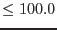
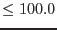
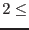
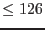
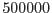

| Parameter | Mand | Type | Default | Constraints |
| inset | yes | dataset | | |
The image dataset to be smoothed.
|
| outset | no | dataset | outimage.ds | |
The resulting smoothed data set.
|
| tempset | no | dataset | tempimage.ds | |
Name for a temporary dataset (only important if one is running several parallel asmooths).
|
| smoothstyle | no | string | adaptive | simple|adaptive|withset|template |
The type of smoothing desired.
|
| convolverstyle | no | string | gaussian | gaussian|tophat|squarebox |
This parameter is read if smoothstyle=`simple' is chosen and prescribes the shape or type of convolver to use to smooth the image.
|
| width | no | real | 5.0 pixels |  width  pixels width  pixels |
This parameter is read if smoothstyle=`simple' is chosen. It governs the width of the various types of simple convolver. See section 3.3 for further details.
|
| normalize | no | boolean | yes | |
This parameter is read if smoothstyle=`simple' is chosen. If set, the convolver is divided by its array sum before use. See section 3.3 for further details.
|
| withuserwidths | no | boolean | no | |
This parameter is read if smoothstyle=`adaptive' is chosen. If set, the task reads a list of gaussian-convolver sigma values from the userwidths parameter. See section 3.3.5 for further details.
|
| userwidths | yes | real list | | userwidths pixels |
The list of gaussian-convolver sigma values read when withuserwidths=`yes'. The values must occurr in a monotonically increasing sequence. See section 3.3.5 for further details.
|
| nconvolvers | no | integer | 20 |  nconvolvers  |
If smoothstyle='adaptive' is chosen but withuserwidths=`no', the task constructs a library of nconvolvers gaussian convolvers. See section 3.3.5 for further details.
|
| minwidth | no | real | 0.0 pixels | minwidth pixels |
If smoothstyle='adaptive' is chosen but withuserwidths=`no', the task constructs a library of gaussian convolvers which have sigma values ranging from minwidth to maxwidth. See section 3.3.5 for further details.
|
| maxwidth | no | real | 10.0 pixels | maxwidth pixels |
If smoothstyle='adaptive' is chosen but withuserwidths=`no', the task constructs a library of gaussian convolvers which have sigma values ranging from minwidth to maxwidth. See section 3.3.5 for further details.
|
| widthliststyle | no | string | linear | linear|log|sqrt |
If smoothstyle='adaptive' is chosen but withuserwidths=`no', the task constructs a library of gaussian convolvers. The sigma values of successive gaussians are spaced according to widthliststyle. See section 3.3.5 for further details.
|
| desiredsnr | no | real | 10.0 |  desiredsnr desiredsnr |
Desired signal-to-noise ratio in an adaptively-smoothed image.
|
| writetemplateset | no | boolean | yes | |
After completion of (adaptive) smoothing, save an image of the convolver widths to a file name specified by outtemplateset. See section 3.3.6 for further details.
|
| outtemplateset | no | dataset | template.ds | |
Name of the template image to be written when writetemplateset=`yes'. See section 3.3.6 for further details.
|
| writeconvolvers | no | boolean | no | |
After completion of (adaptive) smoothing, save details of the convolvers used to files named in parameters outconvolversset and outindeximageset. See section 3.3.4 for a description of how these files can be used.
|
| outconvolversset | no | dataset | outconvolvers.ds | |
If writeconvolvers=`yes', the task writes images of all the convolvers to this dataset. It is recommended that outindeximageset and outconvolversset be the same dataset. See section 3.3.4 for a description of how this file can be used.
|
| outindeximageset | no | dataset | outindeximage.ds | |
If writeconvolvers=`yes', the task writes an index image to this dataset. It is recommended that outindeximageset and outconvolversset be the same dataset. See section 3.3.4 for a description of how this file can be used.
|
| inconvolversarray | no | array | inconvolvers.ds:CONV_000 | |
This parameter is read if smoothstyle=`withset'. inconvolversarray is the name of a dataset + array which contains images of all the convolvers to be used. An index image specified in parameter inindeximagearray is also needed. See section 3.3.4 for further details.
|
| withindeximagearray | no | boolean | yes | |
This parameter is read if smoothstyle=`withset'. It specifies whether to also look for an index image dataset+array.
|
| inindeximagearray | no | array | inindeximage.ds:INDEXIMG | |
This parameter is read if smoothstyle=`withset' and withindeximagearray=`yes'. inindeximagearray is the name of a dataset + array which contains an index image, which shows which convolver should be used to smooth which part of the input image in inset. Images of the convolvers are read from parameter inconvolversarray. See section 3.3.4 for further details.
|
| normalizeset | no | boolean | no | |
This parameter is read if smoothstyle=`withset'. If set, the convolvers read from parameter inconvolversarray are divided by their array sums before use.
|
| intemplateset | no | dataset | template.ds | |
This parameter is read if smoothstyle=`template' and contains the name of the template image to be read. See section 3.3.6 for further details.
|
| nopslimit | no | real |  |  |
See developers' notes.
|
| forcecalctype | no | boolean | no | |
Force the use of either all direct processing or all Fourier-domain (see developers' notes).
|
| calcbyfft | no | boolean | yes | |
If forcecalctype is set, this parameter controls which of the two methods to use for the whole image: FFT convolution if true, direct convolution otherwise (see developers' notes).
|
| readvarianceset | no | boolean | no | |
If set, the task reads from parameter invarianceset an image of the variances (squares of the standard deviations) of the input image values.
|
| invarianceset | no | dataset | invariance.ds | |
The name of the dataset which contains an image of the variances (squares of the standard deviations) of the input image values.
|
| writevarianceset | no | boolean | no | |
If set, the task writes to parameter outvarianceset an image of the variances (squares of the standard deviations) of the output image values.
|
| outvarianceset | no | dataset | outvariance.ds | |
The name of the dataset to contain an image of the variances (squares of the standard deviations) of the output image values.
|
| withweightset | no | boolean | no | |
If this is set, the task reads an image of weights from parameter weightset. See section 3.4 for further details.
|
| weightset | no | dataset | weight.ds | |
The image of weights read by the task if withweightset=`yes'. See section 3.4 for further details.
|
| withoutmaskset | no | boolean | no | |
If this is set, the task reads a mask image from parameter outmaskset. See section 3.4 for further details.
|
| outmaskset | no | dataset | outmask.ds | |
The mask image read by the task if withoutmaskset=`yes'. All pixels of inset for which the mask is FALSE are left unchanged. outmaskset may be of any numeric data type: values translate to TRUE, the rest FALSE. See section 3.4 for further details.
|
| writebadmaskset | no | boolean | no | |
If this is set, the task writes to parameter badmaskset a logical-valued image which flags those pixels for which the weighted convolution could not be performed. See section 3.4 for further details.
|
| badmaskset | no | dataset | badmask.ds | |
The image of bad-result flags which is written by the task if writebadmaskset=`yes'. See section 3.4 for further details.
|
| withexpimageset | no | boolean | no | |
If this is set, the task reads an exposure map from parameter expimageset. See section 3.5 for further details.
|
| expimageset | no | dataset | expmap.ds | |
The exposure map read by the task if withexpimageset=`yes'. See section 3.5 for further details.
|
| expmapuse | no | string | samesnr | samesize|samesnr |
This parameter is read if withexpimageset=`yes'. It governs the treatment of variance when adpative smoothing is desired. See section 3.5 for further details.
|
| remultiply | yes | boolean | no | |
This parameter is read if withexpimageset=`yes'. If remultiply=`yes', the output image is remultiplied by expimageset before it is saved to file; otherwise not. See section 3.5 for further details.
|
| Parameter | Mand | Type | Default | Constraints |